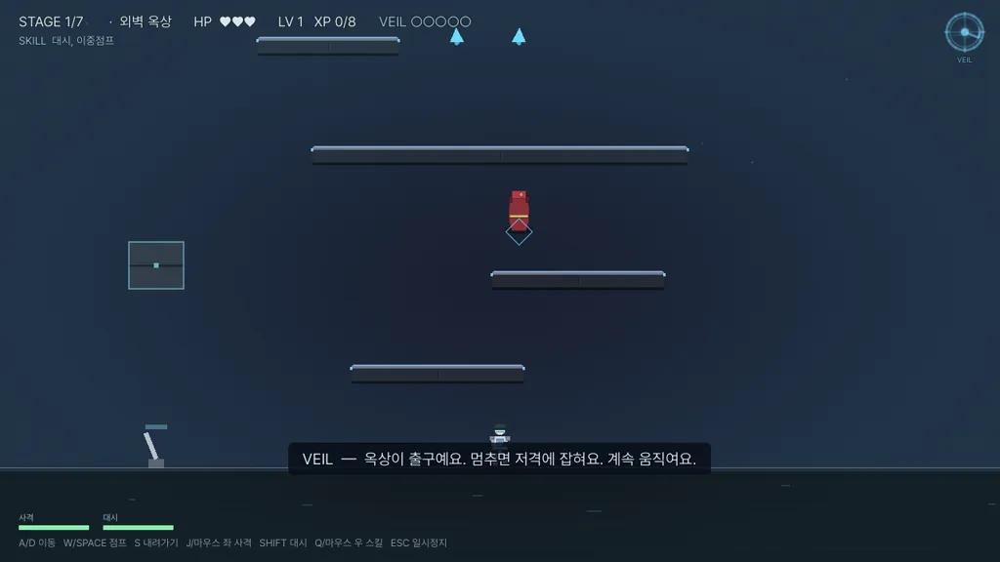
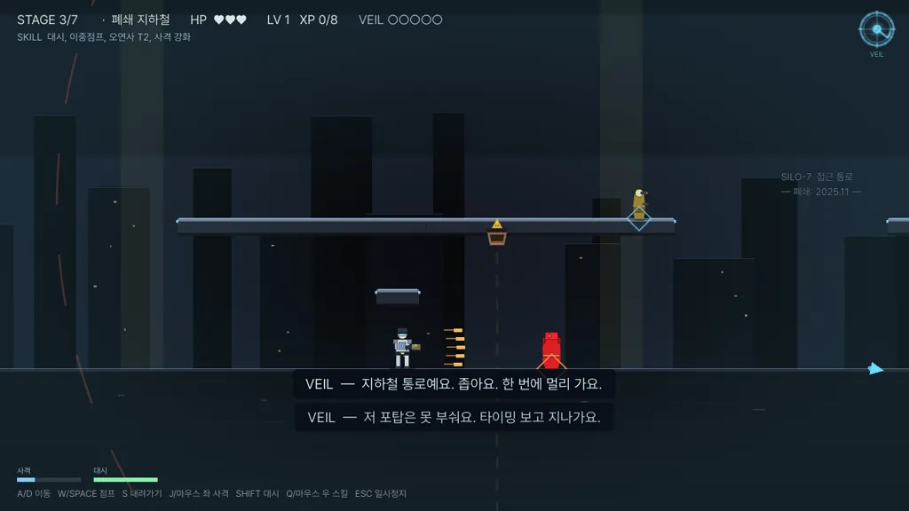
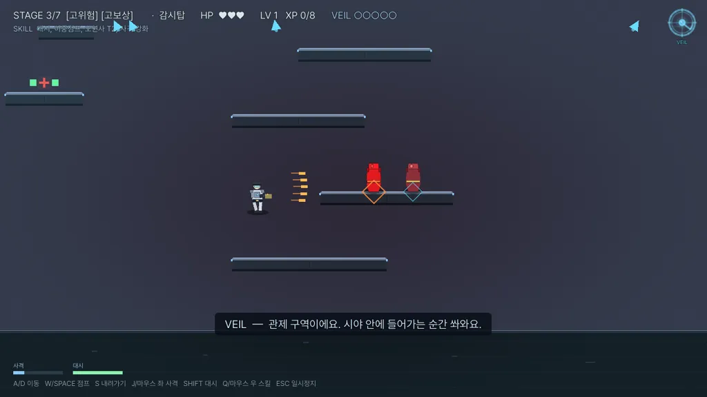

Eyes on You
키보드가 필요한 게임입니다. PC 환경을 권장합니다.
임무 브리핑
최종 목표: 시설 심장부 도달, 데이터 회수, 탈출
도면 없음. 사전 정보 없음.
현장 지원 AI: VEIL.
작전명: PALIMPSEST
모든 구역이 당신을 보고 있습니다



갈림길마다 VEIL이 루트 하나를 권합니다
따를지 말지는 당신이 정합니다.
외곽 진입로
위험 1, 보상 1
외벽 정비 통로. 침투가 시작되는 곳입니다.
폐쇄 지하철
위험 2, 보상 2
좁고 어두운 폐역. 대시로 함정을 넘습니다.
감시탑
위험 3, 보상 3
관제 구역. 사선에 들어가면 즉시 피격됩니다.
데이터 센터
위험 3, 보상 3
서버 랙 사이로 드론과 저격이 동시에 옵니다.
일반 임무는 7스테이지, 루트는 총 12종. 도면에 없는 층도 있다고 합니다.
VEIL은 당신의 선택을 전부 기록합니다
조언
VEIL은 갈림길에서 길을 권하고 위험을 미리 알려 줍니다. 당신의 실력까지 보고 권합니다.
신뢰
추천을 따라 살아남으면 신뢰가 쌓이고, VEIL의 어투가 변합니다. 무시해도 벌은 없고, 관계가 자라지 않을 뿐입니다.
정체
마지막에 VEIL이 누구였는지 드러납니다. 엔딩 4종은 당신의 선택 패턴이 가릅니다.
첫 갈림길을 미리 겪어 보십시오
개발 일지
전시 부스에서 한 판씩 해 보는 게임으로 시작해 웹 데모로 마감하기까지 남긴 기록입니다. 맨 끝의 한 항목은 그 뒤 새 저장소에서 시작한 확장판 이야기입니다.
-
2026년 4월 28일 ~ 30일
부스에서 한 판을 끝내는 게임
Eyes on You는 전시 부스에서 QR 코드로 바로 들어와 한 판을 끝내고 나가는 게임으로 기획했습니다. 첫 기획서에는 30초 안에 조작이 손에 익고, 8~15분 안에 한 판이 끝나야 한다는 목표를 적었습니다.
4월 30일에 올린 첫 커밋에는 타이틀에서 브리핑과 루트 선택을 거쳐 스테이지와 엔딩까지 이어지는 한 판의 흐름이 이미 들어 있었습니다. AI 파트너 VEIL을 얼마나 믿었는지와 요원이 얼마나 싸웠는지, 이 두 점수로 엔딩 네 개를 가르는 뼈대도 이때 함께 들어갔습니다.
-
2026년 5월 1일 ~ 5일
그림 파일 대신 코드로 그린 요원
처음에는 PNG 그림에 셰이더를 씌워 흰 배경을 잘라 내는 방식으로 캐릭터를 그렸습니다. 그런데 그림과 실제 충돌 판정이 어긋나 있었고, 잘라 낸 외곽선도 거칠었습니다.
그래서 5월 1일에 그림 파일을 버리고, 충돌 판정 상자 안쪽에 도형을 겹쳐 그리는 방식으로 캐릭터를 다시 만들었습니다. 5월 5일에는 앞으로도 외부 그림 자산을 쓰지 않고 코드로 그린 도형만 다듬기로 정했습니다. AI가 만든 게임이라는 정체성을 그림에서도 드러내려는 결정이었습니다. 지금도 게임 화면에 쓰는 이미지 파일은 한 장도 없습니다.
-
2026년 5월 2일
도시 곳곳에서 시설 하나로
처음 만든 맵 여섯 개는 도시의 여러 장소였습니다. 이날 이 맵들을 보안 시설 SILO-7의 진입 경로로 바꿔서, 외곽에서 시작해 옥상이나 지하철을 거쳐 시설 깊은 곳까지 들어가게 했습니다. 게임 전체를 PALIMPSEST라는 작전 하나로 묶은 이야기와 맞추기 위해서였습니다.
같은 날 요원의 체력을 5에서 3으로 줄였습니다. 체력이 5일 때는 좀처럼 죽지 않아서 적이 위협으로 느껴지지 않았기 때문입니다.
-
2026년 5월 3일 ~ 4일
브라우저에서 깨진 한글
5월 3일에 GitHub Pages 자동 배포를 연결해서, 저장소에 올린 코드가 브라우저 판에 바로 반영되게 했습니다. 그런데 웹에서 열어 보니 한글이 깨져 있었습니다.
한글 글꼴을 게임에 직접 넣어야 했는데, Noto Sans KR은 16MB쯤 되어 부스에서 바로 열기에는 무거웠습니다. 그래서 다음 날 1.5MB 남짓한 Pretendard를 골라 넣었습니다.
-
2026년 5월 4일
큰 배너 대신 VEIL의 한마디
보스 SENTINEL이 다음 단계로 넘어갈 때 화면에 큰 영어 배너가 뜨게 만들었다가, 같은 날 지웠습니다. 대신 VEIL이 짧게 한마디 하도록 바꿨습니다.
VEIL: 패턴이 바뀌었어요. 양쪽 조심해요.
이날 'show, don't tell'을 원칙으로 정했습니다. 글로 설명하기보다 플레이어가 직접 겪으면서 알게 하자는 것으로, 이후 문구와 연출을 정할 때마다 가장 먼저 따지는 기준이 됐습니다. 적 도감도 공략법을 적는 대신, 처음 마주친 적을 관찰한 메모 한 줄로 줄였습니다.
-
2026년 5월 5일
조작이 낯선 사람을 위한 코스
Xbox 컨트롤러를 지원하게 하고, 스토리 모드를 새로 만들었습니다. 키보드나 게임패드 조작이 어려운 사람을 위한 코스라서, 이 모드에서는 체력이 닳지 않고 스테이지도 일곱 개에서 다섯 개로 줄어듭니다. 보스는 단계 전환 없이 짧게 끝나고, 드론도 나오지 않습니다.
-
2026년 5월 8일
음악은 장소를 따라
배경음악은 Suno로 만들었고, 어떤 곡을 어디에 쓸지는 제가 골랐습니다. 곡은 스테이지 순서가 아니라 요원이 지나는 장소를 따라 바뀝니다. 몇 번째 스테이지인지가 같아도 바깥 통로와 시설 안은 분위기가 달라야 했고, 시설 안으로 들어서는 순간이 템포를 한 단계 올리기에 자연스러웠기 때문입니다.
요원이 죽었을 때는 곡을 바꾸지 않고 소리만 낮춰 먹먹하게 들리게 했습니다. 곡을 바꾸면 분위기가 끊기고, 소리만 줄이는 쪽이 무력감과 더 잘 맞았기 때문입니다.
효과음은 ElevenLabs로 만들어 5월 9일부터 6월 5일까지 여러 번에 나눠 넣었습니다. 지금 게임에는 배경음악 아홉 곡과 효과음 59개가 들어 있습니다.
-
2026년 6월 7일
VEIL이 보는 것을 화면에
6월 6일과 7일에 걸쳐 이야기를 세 차례 고쳐 쓴 뒤에도 몰입이 덜하다는 문제가 남았습니다. 원인은 구조에 있었습니다. VEIL이 요원 대신 본다는 설정이 루트 카드의 추천 표시나 브리핑, 자막처럼 플레이 사이에 나오는 글로만 전해지고, 정작 플레이하는 동안에는 드러나지 않았습니다.
그래서 플레이 중에 VEIL이 위협을 짚어 주는 표시를 만들었습니다. 화면 안의 적에는 옅은 표시가 겹쳐 뜨고, 화면 밖의 적은 가장자리의 화살표가 가리킵니다. 요원은 못 보고 VEIL만 보는 것이 이제 글이 아니라 화면에 있습니다.
표시가 레이더처럼 보이지 않도록 방금 짚은 것처럼 떠오르게 하고, 화면 밖에 새 위협이 생기면 VEIL이 방향을 말로 알려 주게 했습니다. 이야기 후반에는 이 표시들이 흔들리다가 하나둘 꺼집니다. VEIL의 시야가 무너지는 순간을 설명 없이 화면으로 겪게 하려는 것입니다.
-
2026년 6월 8일
폭발물 하나로 끝나지 않게
폭발물 스킬 하나가 거의 모든 적을 한 번에 쓸어 버렸습니다. 그래서 피해량과 재사용 대기 시간을 함께 줄이고, 동시에 맞힐 수 있는 적의 수에도 상한을 두었습니다. 방패를 무시하고 터지는 성질은 남겨서, 방패병을 만났을 때 꺼내 드는 스킬이 되게 했습니다.
같은 날 적마다 잘 듣는 스킬을 하나씩 정했습니다. 레벨업할 때 VEIL은 지금 맵에 나오는 적을 보고 그에 맞는 스킬을 콕 집어 권하고, 그 스킬은 후보 카드에도 더 자주 나옵니다. VEIL이 요원의 실력을 보고 루트를 권하도록 바꾼 것도 이날입니다.
-
2026년 6월 13일
말투가 바뀌는 조건
VEIL의 대사에서 같은 어미가 되풀이되는 문제가 두 번째로 나오자, 대사를 하나씩 고치는 대신 말투 자체를 이야기의 장치로 쓰기로 했습니다. 처음에는 차가운 관제사처럼 격식체로 말하던 VEIL이 점점 부드러운 해요체로 바뀌는 흐름입니다.
말투가 풀리는 기준은 처음에 스테이지 진행으로 잡았다가, 같은 날 둘로 나눴습니다. 말투가 얼마나 풀릴지는 VEIL에 대한 신뢰가 정하고, 안내를 얼마나 자세히 해 줄지는 요원이 죽는 횟수가 정합니다. 그래서 한 번도 죽지 않고 위기도 겪지 않은 요원에게는 VEIL이 끝까지 차갑게 남을 수 있습니다. 따뜻함은 관계에서 나오는데, 함께 고비를 넘긴 적이 없으면 관계도 생기지 않는다고 봤습니다.
격식체로 말하는 대사도 교과서 같은 문장 대신 작전 통신에서 쓸 법한 말투로 다시 썼습니다.
VEIL: 위험한 건 제가 먼저 확인하겠습니다. 화면 끝에 띄워둘 테니, 요원은 전방만 보십시오.
-
2026년 6월 13일 ~ 15일
만든 사람을 정직하게
게임의 크레딧을 고쳤습니다. 사람이 만들지 않은 부분에는 제 이름을 넣지 않기로 하고, 기획과 방향을 정하고 결과를 검수한 Direction에만 이름을 남겼습니다. 코드와 그래픽, 대사 초안은 Claude Code가 만들었고, 음악은 Suno로, 효과음은 ElevenLabs로 만들었다고 그대로 적었습니다.
전시용 포스터도 같은 기준으로 만들었습니다. AI가 그린 일러스트는 실제 게임 화면과 달라 게임을 잘못 보여 줄 수 있어서, 게임 엔진 안에서 포스터를 만들고, 실제 플레이 화면을 찍어 넣었습니다. 6월 15일에 만든 두 번째 포스터에는 코드부터 효과음까지 전부 AI 도구로 만들었다는 사실을 앞세웠습니다.
-
2026년 6월 16일
저장소를 공개하기 전에
포트폴리오로 저장소 링크를 나누기 전에, 지금까지 올린 파일과 커밋 기록 전체에 비밀 키나 개인 정보가 섞여 있지 않은지 확인했습니다.
비어 있던 라이선스도 이때 정했습니다. 코드는 MIT로 열고, 함께 들어 있는 글꼴과 음악, 효과음은 각자의 약관을 따른다고 따로 적었습니다. MIT가 제 것이 아닌 자산의 재배포까지 허락하는 것처럼 읽히면 안 되기 때문입니다.
-
2026년 6월 23일
게임이 알려 주지 않은 것
6월 15일에 플레이 의견을 받는 설문을 열고, 포스터의 QR 코드와 게임 안의 '피드백 보내기' 버튼으로 이어 두었습니다. 처음 모인 의견을 정리해 보니, 약점은 버그나 밸런스보다 게임이 알려 주지 않는 것에 몰려 있었습니다.
보스전만 해도 피할 때와 쏠 때를 알려 주는 신호가 이미 코드에 있었는데, 플레이어에게 읽히지 않았습니다. 그래서 밸런스가 아니라 안내의 문제로 보고, 보스전에 들어설 때 VEIL이 공략법을 한 번 짚어 주게 했습니다.
VEIL: 빨간 불빛이 번뜩이면 그 자리를 비켜요. 신호가 멎은 틈에 쏘면 돼요.
오프닝에는 최종 목표를 또렷하게 적고, 모든 적과 싸울 필요는 없다는 말을 VEIL이 첫 맵에서 한 번 더 하게 했습니다. 드론과 보스는 체력을 줄이는 대신 그림과 피격 범위를 같은 비율로 키워서, 보이는 만큼 맞으면서도 맞히기는 쉬워지게 했습니다.
-
2026년 6월 23일
전시가 끝나고 각자의 브라우저로
전시가 끝나면서 설계의 기준도 부스에서 웹으로 옮겼습니다. 여러 사람이 한 기기에서 돌아가며 하는 게임이 아니라, 각자 자기 브라우저에서 하는 게임이 된 것입니다. 첫 기획서에서는 한 번에 끝나는 짧은 플레이를 전제로 저장 기능을 빼 두었고, 타이틀로 돌아올 때마다 적 도감을 비우는 코드도 남아 있었습니다.
그래서 스테이지 사이마다 자동으로 저장되게 하고, 타이틀의 '이어하기'로 돌아올 수 있게 했습니다. 브라우저를 닫았다가 다시 열어도 진행 상황과 도감, 이미 본 엔딩이 남습니다. '게임 종료' 버튼은 브라우저 탭을 닫지 못하고 화면만 멈추게 해서, 웹 판에서는 숨겼습니다.
스테이지 도중에 맞거나 죽은 기록은 저장되지 않아서, 창을 닫았다가 이어하면 되돌릴 수 있습니다. 그래도 맞은 횟수와 죽음은 VEIL의 말투와 추천에만 영향을 주고 따로 걸린 보상이 없어서, 막지 않고 그대로 두었습니다.
-
2026년 6월 23일
다시 시작한 판의 VEIL
엔딩을 한 번 본 사람이 다시 시작하면 오프닝이 달라지게 했습니다. 부스에서는 한 기기를 여러 사람이 써서 다시 하는 사람을 알아볼 수 없었지만, 웹에서는 완주 기록이 그 사람의 브라우저에 남습니다.
VEIL: 기록상 우리는 처음입니다. 그런데, 이상하네요.
다시 하는 판의 대사를 다듬으면서 VEIL이 지킬 규칙도 정했습니다. 후보 대사 네 개를 쓰지 않기로 한 뒤 무엇이 어색했는지 따져 보니, 모두 요원의 몸이 길을 기억한다거나 VEIL이 앞일을 이미 안다는 대사였습니다. 그래서 VEIL은 자기가 느낀 것만 말하고, 결말을 아는 듯한 말은 하지 않게 했습니다. 낯익다는 느낌도 소리나 정적, 어둠처럼 VEIL 자신의 감각으로 표현합니다.
요원과 VEIL이 서로 존댓말을 쓰는 사이라는 것도 이날 정했습니다. 그래서 VEIL이 요원에게 무언가를 하라고 할 때는 '-세요'를 쓰고, 초반에는 더 격식을 갖춘 '-십시오'를 씁니다.
-
2026년 6월 23일 ~ 24일
데모는 그대로 두고
6월 23일에는 지금 판을 데모로 마감해 그대로 두고, 확장판은 새 저장소에서 만들기로 했습니다. 이 게임은 github.io 주소에서 돌아가는데, 같은 저장소에서 확장판을 만들면 데모 주소를 북마크해 둔 사람이 하던 게임까지 바뀌어 버리기 때문입니다.
다음 날 데모의 코드를 그대로 가져가 새 저장소 EyesOnYou-Full을 만들었습니다. 그 뒤로 데모에는 발판 끝에서 조금 늦게 눌러도 뛰어오르게 한 점프 보정과 새 키 배열처럼 확장판에서 먼저 고친 것을 옮기고, 7월 6일까지 작은 수정만 더했습니다.
-
2026년 6월 25일
추천을 무시해도 나오던 신뢰 엔딩
VEIL의 추천을 거의 따르지 않았는데도 신뢰 쪽 엔딩이 나오는 문제가 있었습니다. 루트는 대부분 두 갈래라서 아무렇게나 골라도 추천을 절반쯤은 따르게 되는데, 신뢰 엔딩의 기준이 '추천을 절반 이상 따랐는가'였기 때문입니다.
그래서 기준을 3분의 2로 올렸습니다. 한 판에 추천이 대여섯 번 나온다면 그중 네 번 이상은 따라야 VEIL을 믿은 것으로 칩니다.
-
2026년 9월 11일
추측으로 덧대지 않기
확장판에서는 보스전이 너무 빨리 끝나 허무하다는 문제가 남아 있었습니다. 처음에는 보스가 한동안 공격을 받지 않는 구간을 넣어 싸움을 늘렸지만, 그건 길이만 억지로 맞추는 방법이었습니다.
그래서 다른 게임 여섯 개가 보스전의 길이를 어디서 얻는지 조사한 뒤 원칙을 바꿨습니다. 보스가 무적으로 버티는 시간이 아니라, 요원이 공격을 피하느라 쏠 틈이 없는 시간에서 길이가 나오게 하는 것입니다. 그날 밤에는 보스 체력이 레벨이 아니라 요원의 화력에 맞춰 늘어나게 해서, 어떤 스킬 조합으로 가도 싸움의 길이가 비슷해지게 했습니다.
이 일을 계기로 작업 규칙도 하나 정했습니다. 게임이나 밸런스에 문제가 생기면 추측으로 덧대지 않고, 다른 게임들이 같은 문제를 어떤 원리로 풀었는지 먼저 찾아본 다음에 방향을 잡습니다. 남들의 해법을 모아 쓰는 것이 AI와 함께 만드는 방식의 장점인데, 추측으로 덮으면 그 방식의 단점만 남는다고 봤기 때문입니다.
2026년 4월 28일에 프로젝트를 만들고 4월 30일에 첫 커밋을 올렸습니다. 6월 23일 데모로 마감한 뒤에도 7월 6일까지 몇 가지를 더 고쳐, 데모 저장소에는 커밋이 324개 쌓였습니다. 확장판 저장소는 6월 24일에 시작했고, 9월 12일까지의 커밋은 388개입니다.
만든 사람: soomin007. 함께 쓴 도구: Claude Code(코드와 그래픽, 대사 초안), Suno(음악), ElevenLabs(효과음)
"요원이 저를 믿을수록, 제가 더 많이 도와드릴 수 있습니다."